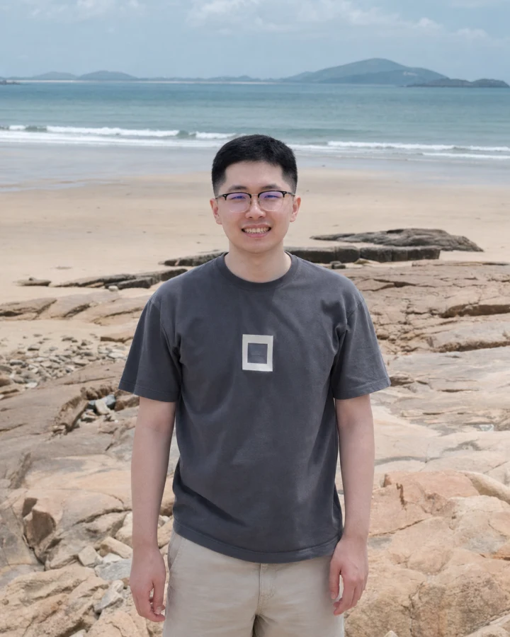
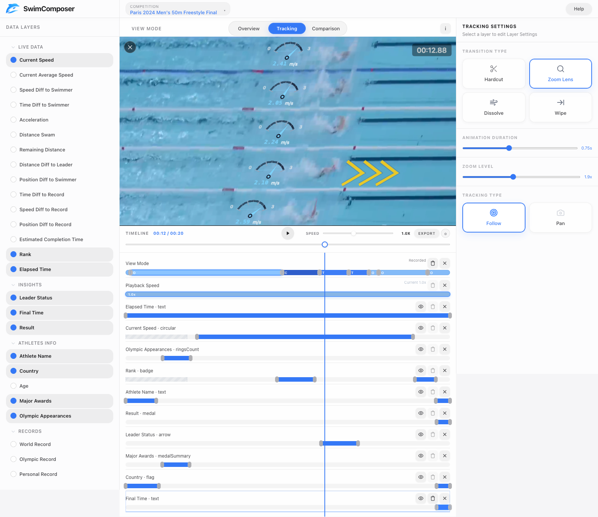

2026

Incoming PhD Student · September 2026
Junhao Zhao 赵俊豪
Visualization · Human-Computer Interaction · AI Agents
I am an incoming PhD student at Xi'an Jiaotong-Liverpool University, advised by Dr. Lijie Yao. My research interests span visualization, human-computer interaction, and AI agents. I design and study interactive systems that help people author, understand, and communicate data-driven visual content, with a current focus on visualization in motion and AI-assisted visualization workflows.
I am currently a Research Assistant at XJTLU. I received my MSc in Artificial Intelligence from Xiamen University, where I worked with Prof. Chenglu Wen on 3D scene perception.
News
SwimComposer was accepted by IEEE TVCG for presentation at IEEE VIS 2026.
Presented our work on structured AI agents at the IEEE VIS VISxGenAI workshop.
Joined Xi'an Jiaotong-Liverpool University as a Research Assistant.
Research
My research explores how interactive systems can support visual explanation across data, video, and AI-assisted analysis.
- Visualization in motion Data-driven storytelling in sports and other video contexts.
- Interactive authoring Tools for composing views, transitions, and narrative structures.
- AI agents Structured and inspectable workflows for visualization and reporting.
Selected Publications
ORCID profile2025
Structured AI Agents for Reliable Visualization Report Generation
IEEE VIS Workshop on GenAI, Agents, and the Future of VIS (VISxGenAI).
2023
SemanticFlow: Semantic Segmentation of Sequential LiDAR Point Clouds from Sparse Frame Annotations
IEEE Transactions on Geoscience and Remote Sensing, 61, 1–11.
Selected Project
IEEE VIS 2026
SwimComposer
An interactive authoring environment for composing narrative visualizations in swimming-race videos. It coordinates data layers, views, transitions, and timing within a single workspace.

Background
Sep 2026—
PhD Student
Xi'an Jiaotong-Liverpool University · Advisor: Dr. Lijie Yao
2025—present
Research Assistant
Xi'an Jiaotong-Liverpool University
2020—2023
MSc in Artificial Intelligence
Xiamen University · Advisor: Prof. Chenglu Wen
2014—2018
BSc in Information Management and Information Systems
Nanjing Audit University